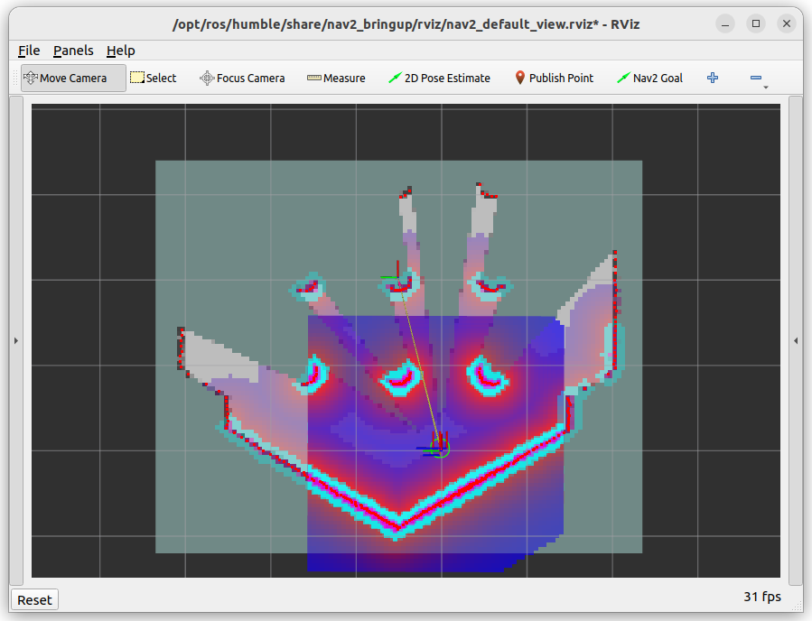

üöÄ Proj 1: SLAM#
(not ready yet)
üìå Objectives#
Students should be able to implement a ROS2 node to detect walls using LiDAR data.
üìú Overview#
In this project, we will enable our robot to autonomously navigate an unknown maze and build a map of the environment. As in the previous lab, we will use LiDAR to detect the walls of the maze (or obstacles) surrounding the robot. We will be utilizing the Simultaneous Localization and Mapping (SLAM) library provided by ROS2 and TurtleBot3.
SLAM, or Simultaneous Localization and Mapping, is a process used in robotics to enable a robot to build a map of an unknown environment while simultaneously determining its location within that map. It involves combining sensor data, algorithms, and probabilistic methods to perform real-time mapping and localization. SLAM is crucial for autonomous robots to operate effectively in environments where pre-existing maps are not available.
SLAM is one of the fundamental algorithms in robotics and is widely used in applications such as autonomous vehicles, drone navigation, and robotic vacuum cleaners. It enables robots to navigate dynamic and unfamiliar environments without relying on GPS or pre-defined maps, which is essential for many real-world scenarios.
SLAM integrates data from sensors like LiDAR and odometry to construct and update a map while estimating the robot’s position. Through statistical methods like Kalman Filters or Particle Filters, SLAM corrects errors in localization and mapping to achieve accurate results. While the underlying mathematics involves advanced topics in statistics and optimization, libraries provided in ROS2 simplify SLAM’s implementation, making it accessible for practical applications.
We will use Cartographer in this lab because it provides an efficient and accurate SLAM solution for 2D environments like the maze we’ll be mapping. Its ability to handle LiDAR data and update maps in real time makes it ideal for this project. Furthermore, its compatibility with TurtleBot3 and ROS2 simplifies the setup, allowing us to focus on understanding the SLAM process and its applications.
üõ†Ô∏è Lab Procedures#
Setting Up TurtleBot3 with SLAM in Gazebo#
Follow these steps to simulate SLAM with TurtleBot3 in the Gazebo environment.
Download the
maze Gazebo files. Extract the files and move them inside the appropriate directories in~/master_ws/src/turtlebot3_simulations/turtlebot3_gazebo. Ensure each new directory is moved to the existing directory with the same name.Launch the Gazebo world:
ros2 launch turtlebot3_gazebo maze.launch.py
It will launch the Gazebo simulation for the maze as shown in the figure below

Open another terminal and run the Cartography SLAM:
ros2 launch turtlebot3_cartographer cartographer.launch.py use_sim_time:=true
This will start the SLAM process, and Cartographer will begin building the map shown below as you move the robot.

Use
gamepadto manually navigate the robot in Gazebo and build the map:ros2 launch lab4_gamepad gamepad.launch.py
Ensure you navigate the entire maze. The obstacles (walls) are represnted in black. As the gray pixels represent noise, solid black color means low uncertainty of the obstacles. If you complete multiple laps, the uncertainty of the obstacles will be lower - light gray pixels will become dark gray pixels.

Once the mapping process is complete, save the generated map:
ros2 run nav2_map_server map_saver_cli -f ~/map
Download
map_plotter.pyto yourhomedirectory and make it executable.chmod +x map_plotter.py
Then, verify if the file is now executable using
ls -lImportant
If you are asked to write the command that makes a file executable only for the file owner, you should be able to answer in your GR. üòâ
Run the python script to plot the map
./map_plotter.py
Verify that the dimensions of the map in the plot correpsond to the actual maze. The length of the wall pieces is 0.18 meters.
Autonomous Navigation with SLAM#
To run autonomous SLAM using Cartographer, we need to set up Cartographer to build the map and use Navigation2 to autonomously explore the environment and update the map in real-time.
Launch the TurtleBot3 in the Gazebo simulation:
ros2 launch turtlebot3_gazebo turtlebot3_world.launch.py

Start Cartographer to perform SLAM:
ros2 launch turtlebot3_cartographer cartographer.launch.py use_sim_time:=true

You can now run Navigation2 alongside Cartographer to allow the robot to navigate autonomously using the evolving map:
ros2 launch turtlebot3_navigation2 navigation2.launch.py use_sim_time:=true
Cartographer will continue updating the map dynamically as the robot navigates.
Click the
2D Pose Estimatebutton in the RViz2 menu. ThenClick on the map where the actual robot is located and drag the large green arrow toward the direction where the robot is facing.
Use
2D Nav Goalto set a navigation targetAs you set waypoints to navigate multiple target points, the robot will explore the maze as shown below.
Accordingly, the map will be updated as shown below

Explore the entire world and create a map. Ensure you have dark gray obstacles.
Take a screenshot of the cartographer window by right clicking the tileboar. Submit the screenshot on Gradescope.
{kind=link}
{kind=link}
✅ Option 1: Use a Python Script with an Action Client#
You can create a Python script to send a sequence of goals to Nav2 using the FollowWaypoints action.
Example Script to Send Multiple Goals:#
Create a new Python script:
mkdir -p ~/master_ws/src/multi_goal_nav
cd ~/master_ws/src/multi_goal_nav
touch multi_goal_nav.py
chmod +x multi_goal_nav.py
Add the following code to
multi_goal_nav.py:
#!/usr/bin/env python3
import rclpy
from rclpy.node import Node
from geometry_msgs.msg import PoseStamped
from nav2_msgs.action import FollowWaypoints
from rclpy.action import ActionClient
import time
class MultiGoalNav(Node):
def __init__(self):
super().__init__('multi_goal_nav')
self.client = ActionClient(self, FollowWaypoints, 'follow_waypoints')
self.client.wait_for_server()
def send_goals(self):
# Define multiple goals as PoseStamped messages
goals = []
goal_1 = PoseStamped()
goal_1.header.frame_id = 'map'
goal_1.header.stamp = self.get_clock().now().to_msg()
goal_1.pose.position.x = 1.0
goal_1.pose.position.y = 0.5
goal_1.pose.orientation.w = 1.0
goals.append(goal_1)
goal_2 = PoseStamped()
goal_2.header.frame_id = 'map'
goal_2.header.stamp = self.get_clock().now().to_msg()
goal_2.pose.position.x = -0.5
goal_2.pose.position.y = 1.0
goal_2.pose.orientation.w = 1.0
goals.append(goal_2)
goal_3 = PoseStamped()
goal_3.header.frame_id = 'map'
goal_3.header.stamp = self.get_clock().now().to_msg()
goal_3.pose.position.x = 0.0
goal_3.pose.position.y = -1.0
goal_3.pose.orientation.w = 1.0
goals.append(goal_3)
self.get_logger().info(f"Sending {len(goals)} goals...")
goal_msg = FollowWaypoints.Goal()
goal_msg.poses = goals
self.send_goal_future = self.client.send_goal_async(goal_msg)
self.send_goal_future.add_done_callback(self.goal_response_callback)
def goal_response_callback(self, future):
goal_handle = future.result()
if not goal_handle.accepted:
self.get_logger().info('Goal rejected :(')
return
self.get_logger().info('Goal accepted :)')
self.result_future = goal_handle.get_result_async()
self.result_future.add_done_callback(self.result_callback)
def result_callback(self, future):
result = future.result().result
self.get_logger().info(f'Navigation complete with {result.missed_waypoints} missed waypoints.')
def main(args=None):
rclpy.init(args=args)
node = MultiGoalNav()
time.sleep(2) # Ensure connection to server
node.send_goals()
rclpy.spin(node)
node.destroy_node()
rclpy.shutdown()
if __name__ == '__main__':
main()
Build and Run:
colcon build --packages-select multi_goal_nav
source install/setup.bash
ros2 run multi_goal_nav multi_goal_nav.py
✅ Option 2: Use RViz Waypoints Plugin#
You can also use a plugin in RViz to set multiple waypoints:
In RViz, add the “Waypoint Follower” plugin:
Open RViz.
Click “Add” → “By Topic” → Select
/goal_pose.
In the RViz toolbar:
After adding the plugin, you should see a “Set Waypoints” button.
Click “Set Waypoints” to define multiple goal points on the map.
Once all waypoints are set, click “Follow Waypoints” to start autonomous navigation.
✅ Option 3: Use a YAML File for Goals#
You can create a list of goals in a YAML file and load it at runtime:
Create a YAML file (
multi_goals.yaml) like this:
goals:
- pose:
position:
x: 1.0
y: 0.5
orientation:
w: 1.0
- pose:
position:
x: -0.5
y: 1.0
orientation:
w: 1.0
- pose:
position:
x: 0.0
y: -1.0
orientation:
w: 1.0
Create a launch file to read the goals and send them to Nav2 using
FollowWaypointsaction.
üöÄ Recommended Approach:#
For flexible automation → Use Option 1 (Python script).
For interactive use → Use Option 2 (RViz Waypoints Plugin).
For repeated runs → Use Option 3 (YAML file).
üöö Deliverables#
[20 Points] Complete the
wall_detector.pyScriptEnsure the script is fully functional and implements all required features.
Push your code to GitHub and confirm that it has been successfully uploaded. NOTE: If the instructor can’t find your code in your repository, you will receive a grade of 0 for the coding part.
[15 Points] Complete the
line_follower.pyScriptEnsure the script is fully functional and implements all required features.
Push your code to GitHub and confirm that it has been successfully uploaded. NOTE: If the instructor can’t find your code in your repository, you will receive a grade of 0 for the coding part.
[15 Points] Demonstration
Show the robot successfully move between two walls.